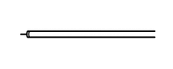
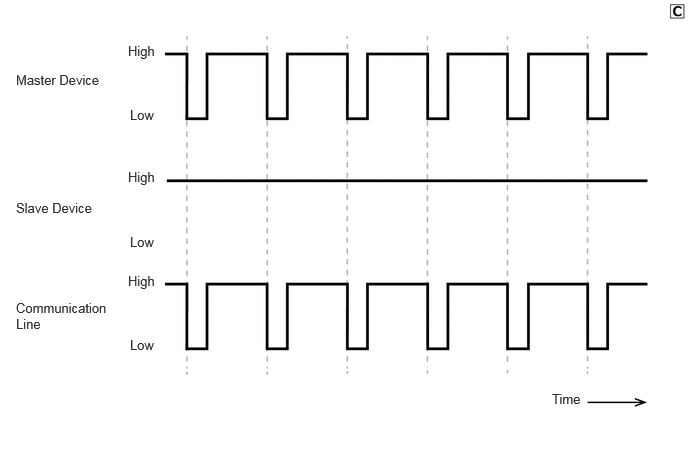
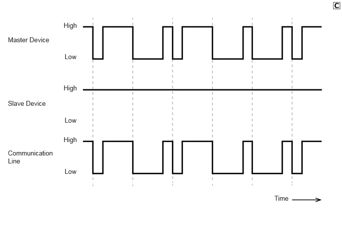
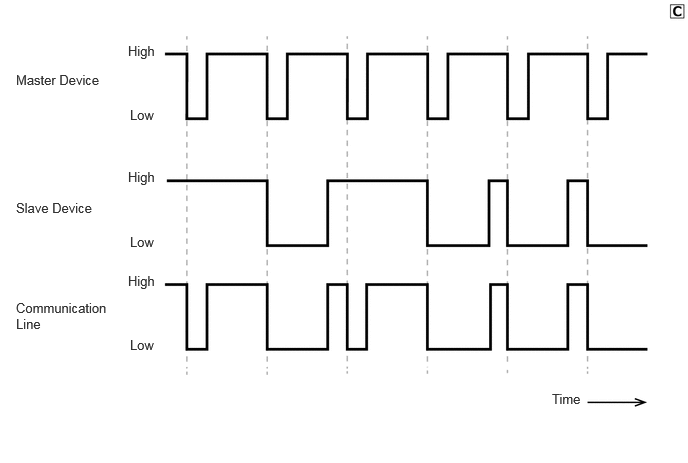

| Last Modified: 10-07-2025 | 6.11:8.1.0 | Doc ID: NM100000002GB1H |
| Model Year Start: 2024 | Model: Tacoma | Prod Date Range: [12/2023 - ] |
| Title: NETWORKING: CXPI COMMUNICATION SYSTEM: GENERAL; 2024 - 2026 MY Tacoma Tacoma HV [12/2023 - ] | ||
GENERAL
GENERAL
(a) Clock Extension Peripheral Interface (CXPI) communication, which makes low-cost and highly-responsive communication possible, is used as a multiplex communication system* to simplify vehicle wire harnesses and achieve high-speed communication.
CXPI Specifications
|
Protocol |
Specifications |
|---|---|
|
Communication Speed |
19.2 kbps |
|
Communication Wire |
AV Single Wire |
|
Drive Type |
Single Wire Voltage Drive |
|
Data Length |
0 - 12 Byte (Variable) |
HINT:
*: The multiplex communication system connects several ECUs together with one communication line so that they can exchange data with each other. As a result, additional wiring is not required when integrating systems and adding functions.
(b) Communication Wire
(1) A single Automobile Vinyl (AV) wire is used for CXPI communication.
|
Communication Wire |
Outline |
|
|---|---|---|
|
AV Single Wire |
 |
This is a lightweight single communication wire that consists of a single core line surrounded by insulation. Voltage is applied to this line in order to drive communication, and this system is called a "single wire voltage drive". |
(c) CXPI communication is composed of a network of one master device (clock* provider side) and multiple slave devices (clock* user side).
HINT:
*: The clock is used to align the sending and receiving timing of each device. The master device provides the communication line with the clock, and the slave devices use this clock to perform communication.
(d) CXPI Communication Protocol (Communication Rules)
(1) CXPI communication is a type of multiplex communication that uses one communication line for all devices that make up the network and makes it possible to send and receive data while offsetting the communication timing. In order to do so, communication is performed according to a communication protocol (communication rules) that is shared by the devices. This communication protocol helps communication be performed smoothly and securely.
(2) The CXPI communication protocol uses the Carrier Sense Multiple Access with Collision Recovery (CSMA/CR) protocol* as the rules for sending data via the communication line. This protocol allows all devices to share one communication line while retaining the right to start sending data.
HINT:
*: This is a type of communication access control where devices constantly detect the condition of the communication line and only send data when no other data is being sent. In addition, when 2 or more devices start sending data simultaneously, the highest priority signal continues to be sent while the lower priority signals stop. Afterward, control is performed so that when no data is being sent via the communication line, the lower priority signals are resent.
(3) When no slave devices are sending data, only the master device can send data.
(4) When slave devices send data, they first detect that the master device is not sending data, and then begin to send data. During this time, the master device becomes unable to send data. Once slave devices finish sending data, the master device can send data again.
(e) Signals sent and received via CXPI communication are sent to the CAN bus via devices connected to the CAN bus.
(f) A diagnostic tool can be connected to perform diagnostic communication. Refer to the Repair Manual for details.